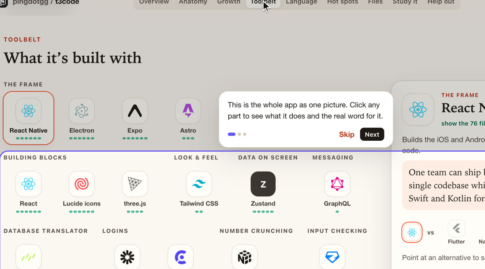
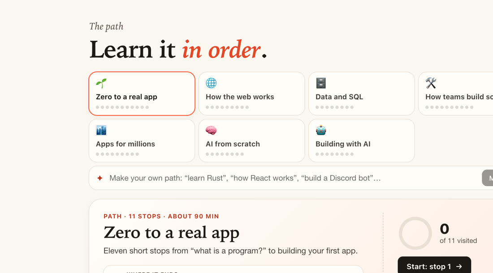
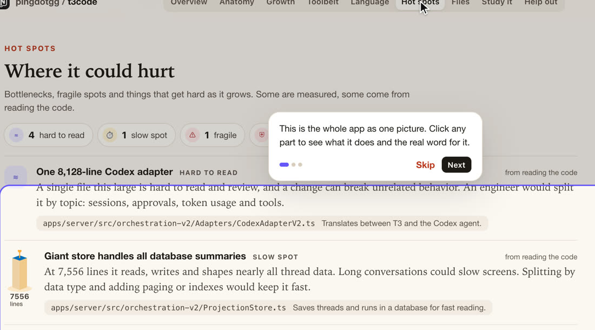

Puzzles
Puzzles that scale.
34 interview puzzles, raced from ten items to a billion.
Free · Open source · for Mac
Ask anything. Get a lesson you can run. Take apart any app.
With the AI you already pay for.
Apple Silicon · Intel · macOS 13 or newer
Uses the plan you already have
No API keys. No account. Bento drives the AI tools already signed in on your Mac.
01 Learn
02 Take apart
Paste a GitHub link. See every part, what it does, and the real word for it.
03 Practice
Puzzles
34 interview puzzles, raced from ten items to a billion.
Toolbelt

Paths

Hot spots

Files

04 On your phone
05 Open source
Apple Silicon · Intel · signed and notarized by Apple